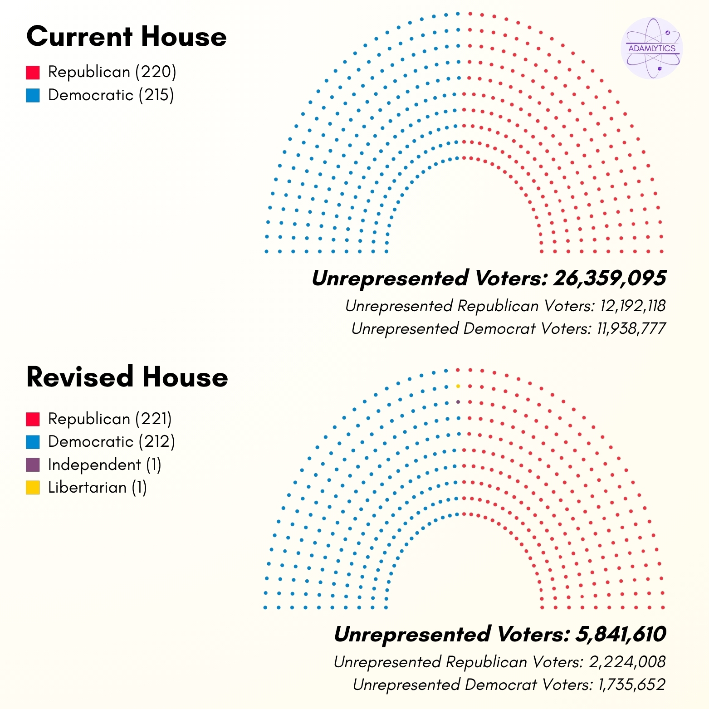
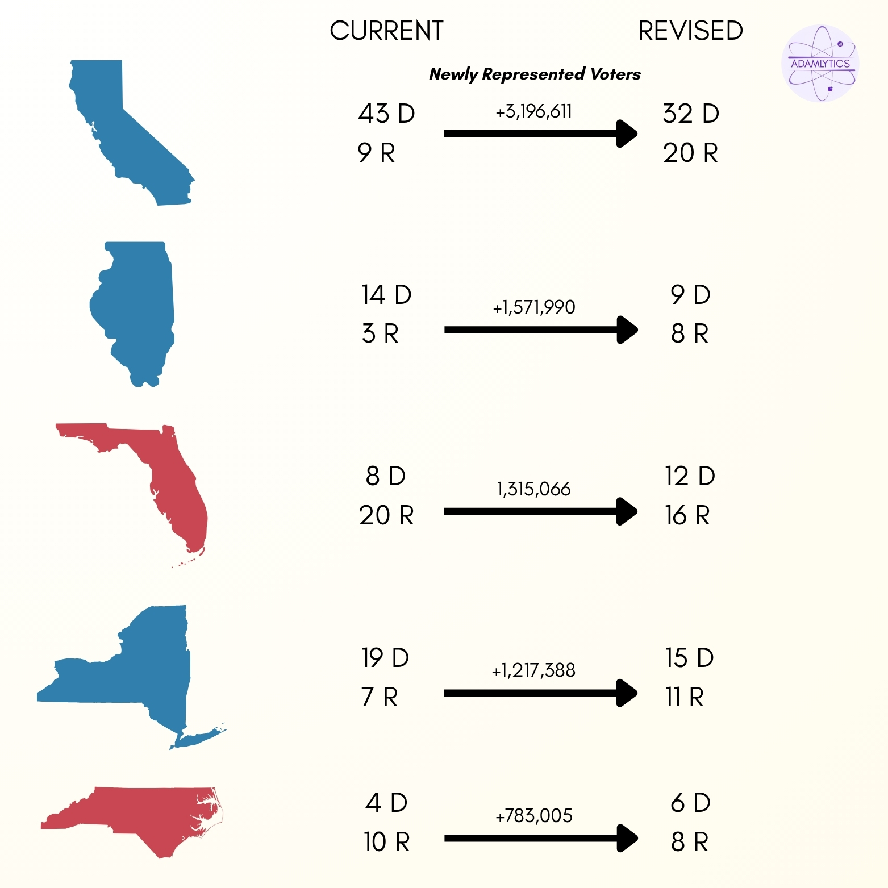
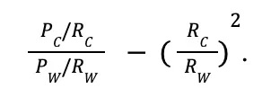
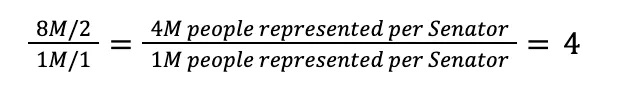
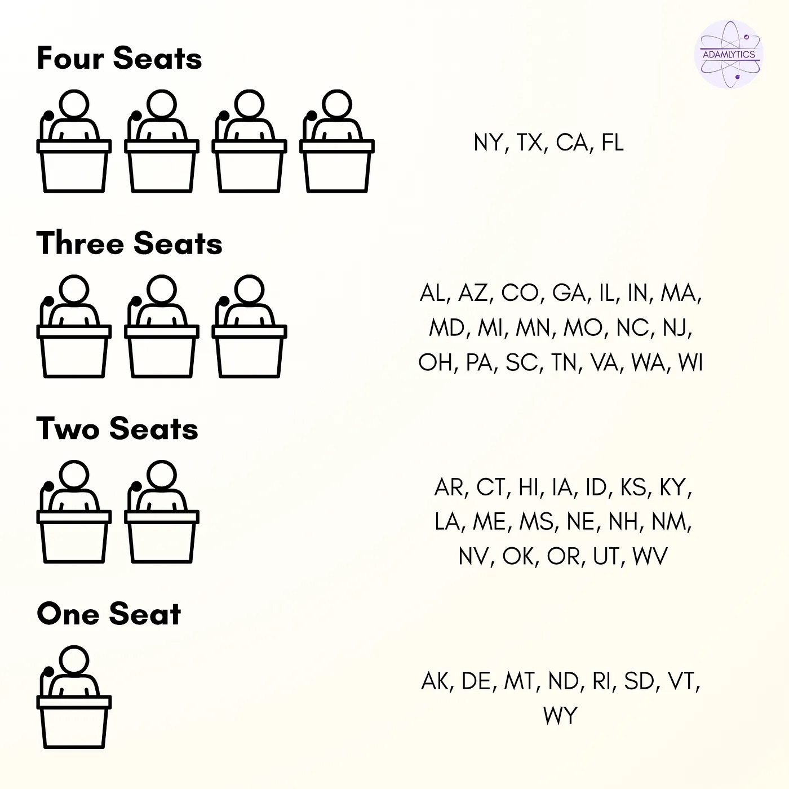
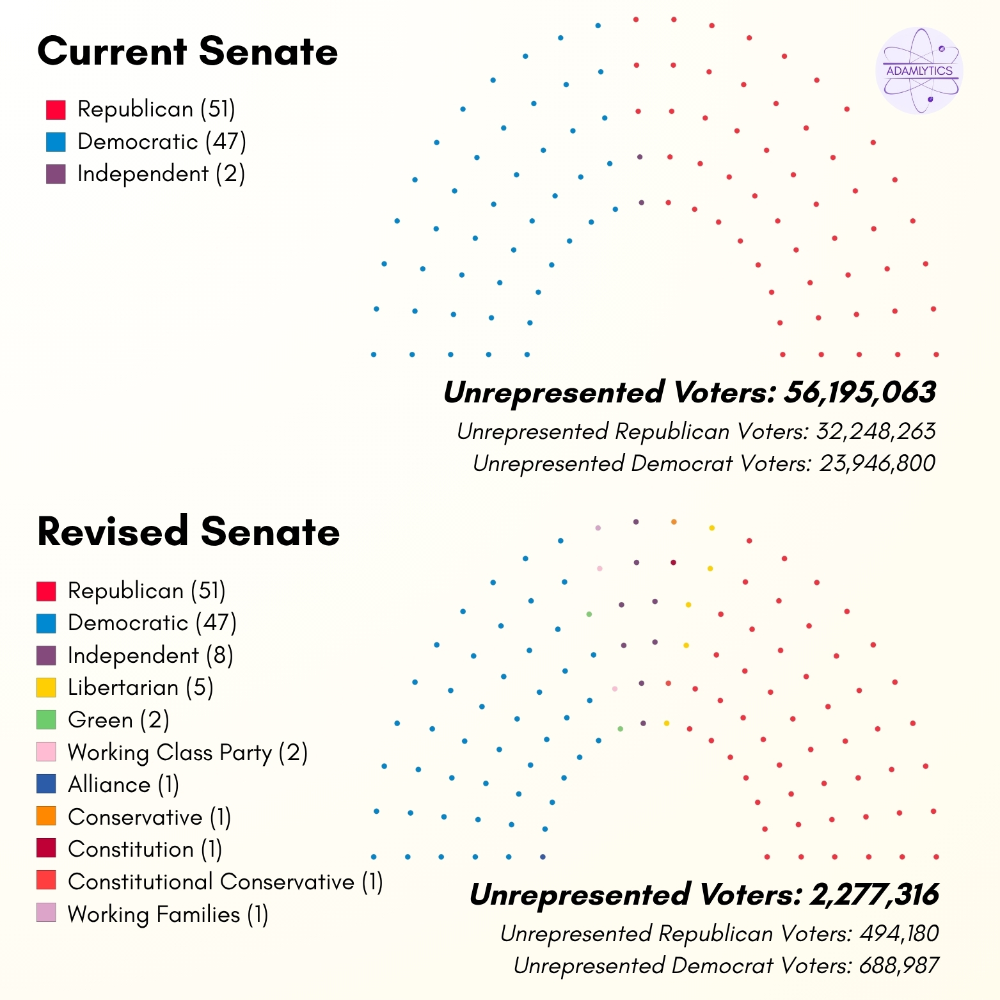
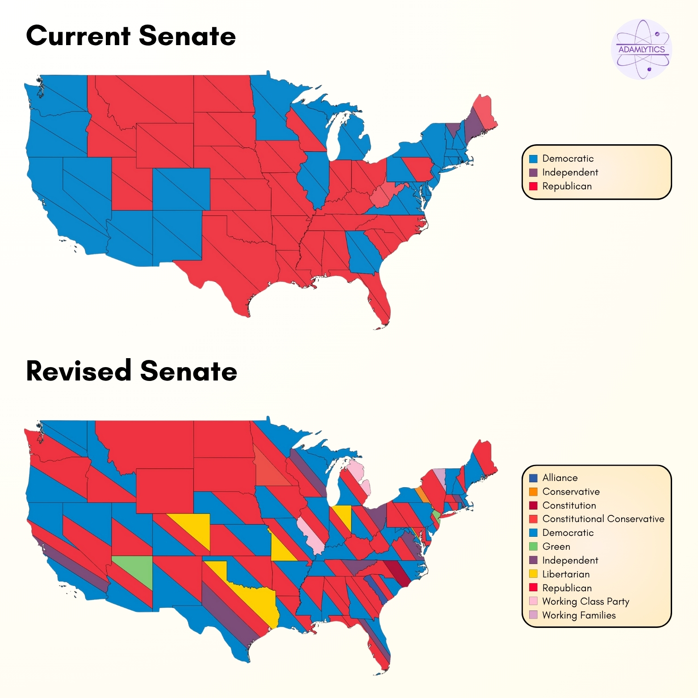

The Case for Proportional Representation in America
The Case for Proportional Representation in America
By Adam Koplik
Introduction
Turns out, the Washington Post over exaggerated what it takes to kill democracy. Cutting out the lights is unnecessary–all you need is a flawed system and a Twitter account. The battle for the American republic has been a push and pull, and as we stare authoritarianism in the face, feasible solutions become more and more undemocratic. The current fight is centered on issue of redistricting. Gerrymandering is the symptom, but the American political system’s lack of true representation leaks deep within it’s foundation. But we could move towards the dream the founding fathers once had, with one change: proportional representation.
America’s current setup begs for conflict. Democrats have moved to ban partisan gerrymandering in the past–with the 2021 Freedom to Vote Act (H.R. 1) gaining party-wide support only to be stopped short by a Republican filibuster–and are refusing to unilaterally disarm when it comes to redistricting.
Additionally, the idea that banning gerrymandering and having lines drawn by a third party would fix the issues is unfortunately not the reality. Take Massachusetts: the bluest of blue states with a 9–0 Democratic advantage in Congress. Democrats no doubt dominate the state, but in the 2024 House elections, Republicans still got 10% of the vote and Independents got 8%. With nine seats, that should be enough for a non-Democratic representative, but in practice, nine Democrats are sent to Washington. Could it be gerrymandering? No, because it is impossible to draw a safe Republican district in the entire state of Massachusetts. There is no feasible scenario where Massachusetts Republicans get any federal government representation under this system. Drawing imaginary lines to decide who has political power is an extremely flawed approach that leaves far too much room for anti-democratic measures to be put into place. So, instead of fighting over the painting, we need to take away the brush.
Proportional representation (PR) is used in nearly 100 nations throughout the world, including Switzerland, Sweden, New Zealand, and Germany. There are a few different methods used in PR governments, including single-transferable vote and mixed member PR, but the most common is party-list PR. Party-list PR is quite simple: vote for a party, seats are allocated proportionally based on that party’s votes. For example, imagine a body has 100 seats and five parties running (A, B, C, D, and E). An election is held, and party A receives 39% of votes, party B receives 20%, C receives 11%, D receives 18%, and E receives 12%. Then, the parties would get 39, 20, 11, 18, and 12 seats in the body, respectively. This system allows for true representation in-lieu of America’s winner-take-all system where, in this scenario, 61% of voters would not have a representative in government. It also creates opportunities for non-major parties to grow, disposing of the concept of “wasted-votes”. So, how could we implement this in America?
The House of Representatives
The House of Representatives is supposed to be the most accurately representative body in the federal government. Seats are proportionally assigned to each state based on population, allowing larger states more power and, in turn, giving each individual person equal say. One vote, one voice. That’s the message that’s supposed to be relayed in the House. Unfortunately, that’s not a reality. Years of gerrymandering, both racial and partisan, have resulted in districts drawn by those in power to remain in power. Districts are drawn with no care to their inhabitants, looking to disenfranchise some and empower others. On top of that, since whoever gets the most votes wins, anybody who doesn’t elect the victorious candidate goes without representation in the House.
For my implementation, I kept the 435 House seats as they’ve been assigned, but changed the election to party-list PR. I used the voting data from the 2024 election, and combined all Congressional House elections in each state based on party. Then, I allocated each of the state’s seats based on which party had the most “unrepresented” voters at that time.
As an example, let’s take a look at Illinois. In the 2024 election, Republicans managed 46.99% of votes across the House elections, but won just three of the state’s 17 Congressional districts. Based on the total voter turnout across the state of 5,357,262, that means that each representative represents about 315,133 voters. Under the current system, that means that over 1.5 million Illinois Republicans are not being represented in the House. Under a proportional representation system, the seats would be allocated much more akin to the voter’s will. In Illinois, the first seat would go to the Democrats, leaving them with slightly less unrepresented voters than Republicans, so the second seat would go to Rs, and it would alternate itself to a 9–8 Democratic majority–or 52.94% of the seats, as close to the party’s statewide support as there gets.
After doing this for all 50 states, the new House of Representatives ends up pretty similar to the current party totals, but with massive differences in the allocation by state. The Republican majority is maintained, gaining one seat in total, as well as one seat going to both Independents (MA) and Libertarians (TX). On a state level, the biggest changes show that the undemocratic system doesn’t discriminate by party. California, where Republicans would gain 11 seats, sees the most voters gaining representation with an improvement of three million, while in Florida, where Democrats would get four more seats than currently, sees over 1.3 million voters no longer going unrepresented. This system is objective, voter focused, and actually allows for true Congressional representation free from make believe political lines being drawn.


The Senate
While gerrymandering and drawing districts gets all the glory, the Senate is the most undemocratic body in the American government. 100 seats, evenly distributed across each state with no care for population–only state boundaries. Wyoming, with 1/67 (just under 1.5%) of the population of California, has equal representation as its much larger compatriot with two senators (double the amount of congresspeople given to the state). This is not a loophole, but the system’s inherent design. James Madison, in the Madison papers, wrote, “…as different interests necessarily result from the liberty meant to be secured, the major interest might under sudden impulses be tempted to commit injustice on the minority.”
The Senate is a body meant to protect from the tyranny of the majority and the fickleness of a universal democracy. This was to demonstrate itself in two ways: equal representation for each state and indirect election of senators. Until the ratification of the 17th amendment, senators were not elected by voters but by members of the state legislature–meant to be the representatives of the people. Since the Senate uses winner-take-all voting like the majority of the nation, senators are not truly a representation of the state, but of who has been propped up by the major parties in a particular year. Extrapolating votes from the 2024 House elections found that over 50 million voters are without Senate representation at this time. Since senators are elected in two separate elections, plurality parties are often represented twice before the runner-up voters get any.
Tyranny of the majority must be protected, but tyranny of the minority is equally dangerous. States rights are a fundamental trait of the United States, but they can not come at the cost of individual rights. The senators are representatives of the states and, by nature, its people, but now they seem to act as spokespeople for their federal party as a whole. They no longer answer to the people which, as put by Thomas Jefferson, is how democracy dies, “The natural progress of things is for liberty to yield and government to gain ground. When the people fear the government, there is tyranny. When the government fears the people,.. there is liberty.”
My proposal for the Senate under proportional representation is a similar process to the House, but with a change in the allocation of seats. To protect from both majority and minority overreach, I tried various seat allocations to minimize both state over state power differences (number of senators) and individual over individual power differences (number of people represented by each senator). As an example, currently the state power ratio is 1, since the largest state (CA) and smallest state (WY) have the same number of senators. On the other hand, the individual power ratio is a little over 67, since each senator from California represents 67x more people than each senator from Wyoming. I optimized the following formula (individual power ratio is on the left, state power ratio is on the right):

As you can see, an optimal solution would be one where the individual power ratio is exactly the value of the representative power ratio squared. For example, if California had 8 million people and Wyoming had 1 million people, allocating California two senators and Wyoming one would result in a representative power ratio of 2:1 and an individual power ratio of 4:1, which would bring an error of zero (work below). In that scenario, California would have 2x the power of Wyoming in the Senate, while an individual voter in Wyoming would have 4x the power of one in California.

Using this formula and the actual populations, I found allocating four seats to California and one to Wyoming minimizes this error. As a result, California has 4x the senators of Wyoming, but each of Wyoming’s under 588,000 residents have a bit more than 16x the voting power of California’s population. From here, I used a logarithmic scale to allocate seats to the remainder of the states, resulting in the following:

Afterwards, the senators were divied up by party in the same way as the House, based on number of unrepresented voters.


The new system results in a staggering over 50 million drop in the number of unrepresented voters in the Senate. Since each senator represents so many more people than each House member, smaller parties were significantly more represented in this revised version of the Senate (now with 120 seats), with Independents (8), Libertarians (5) having big successes. The left-leaning Green (2), Working Class (2), Alliance (1), and Working Families (1) parties all earned seats as well as the Conservative (1), Constitution (1), and Constitutional Conservative parties on the right.
The Gist
The United States is at a turning point in its history. The nation is polarized at a level not seen since the Civil War, and everyday these tensions boil more and more. But this infighting is not a foregone conclusion. Our government has been created and nurtured to promote two major parties that each have the goal of complete destruction of the other. They don’t feel the need to fight for votes because the concept of “wasting your vote” on a third party with no chance of winning feels akin to voting for the party you hate. In turn, there’s no such thing as an anti-establishment vote. Whoever you vote for has millions upon millions of dollars worth of backing and the power to stomp out any alternative parties before they even have a chance. Where has this led us? Tinkering on the cusp of authoritarianism with politicians who don’t truly represent the people making decisions to push us in one direction or the other.
This isn’t a partisan issue–based on the 2024 election, Republicans are actually more unrepresented in Congress than Democrats. It doesn’t matter which party is suffering the punishments of our flawed system, it simply matters that there are voters for who our “representative” democracy is not living up to its name. American democracy quiets the voices of both the few and the many, only amplifying the powerful. The founder’s Great Experiment is teetering, but it’s not dead yet. America can continue the mission it was built upon, but it will take drastic changes. Proportional representation is the path to a better, truer democracy.
Tools Used
- R, RStudio
- Tableau
- LaTeX (for academic writeup)
Data from Michael Minn (sourced from state secretary of state electoral results websites) and US Census.